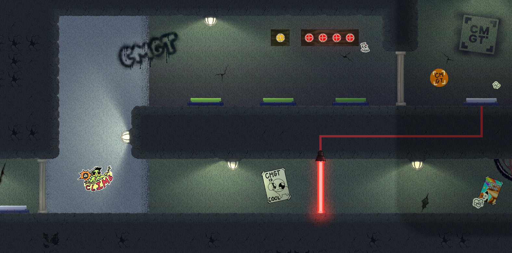
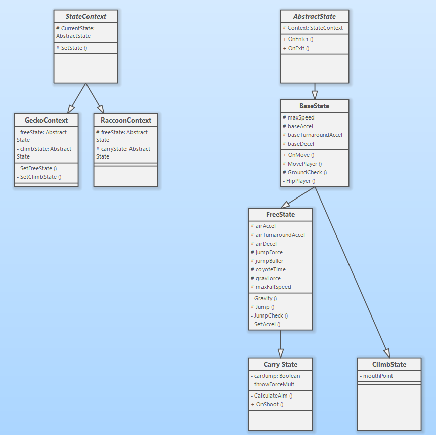

Grand Escape
A 2D local-coop puzzle platformer.
Overview
Grand Escape is a Y2 project built alongside 5 other team members. The goal of the game is to encourage communication between players through the use of gameplay mechanics and level design. My primary role was to build mechanics for the players, environment, & puzzles.

Player behaviour - state pattern
After the initial prototyping phase, I rebuilt player behaviour to utilize the state pattern. I used inheritance for the various player states, with each derived class adding new behaviours.

Signal interfaces
As our game progressed and we created more environmental mechanics, I found us making more and more
single-use classes, such as a button script whose only function was to open and close a door,
and then a second button script which incremented a counter, and so on.
To fix this issue and make our codebase cleaner and more extensible, I created the ISignalSender
and ISignalReceiver interfaces. Now, any two scene elements could interact with one another,
so long as one implemented the receiver interface, and the other implemented the sender interface.
public interface ISignalSender
{
public void SendSignal(params int[] args);
}
public interface ISignalReceiver
{
public void ReceiveSignal(params int[] args);
}
After spending some time with this system, I found the ISignalSender interface to be
superfluous, as there was never a case where a signal receiver needed a reference to a sender, meaning
the abstraction the interface provided was never taken advantage of. There was also the issue that each
signal sender typically needed a non-insignificant amount of boilerplate written for it to function correctly.
In the future, I would replace the ISignalSender interface with a dedicated
SignalSender class, which could then have its SendSignal() method called as necessary.